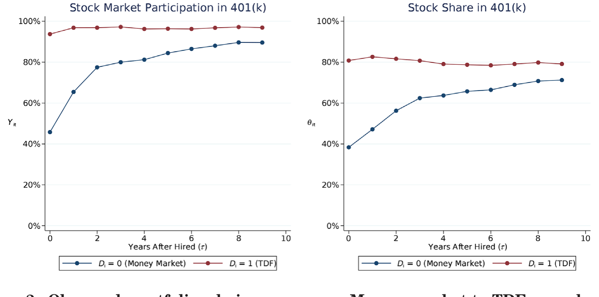
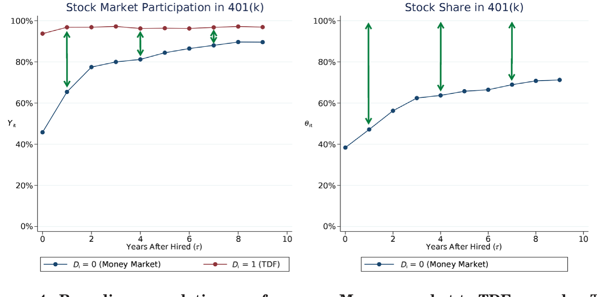
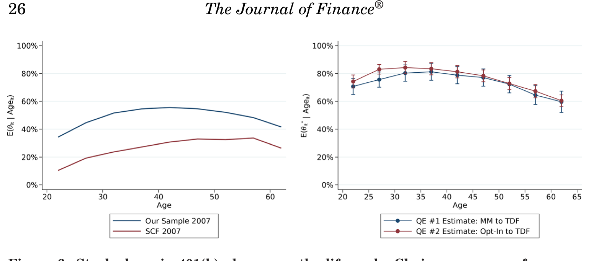
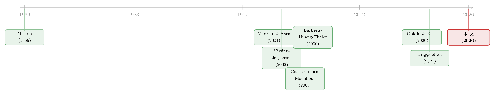

94% 的人其实都想买股票——把「风险厌恶」和「麻烦」分开来量
本文读的是 Choukhmane & De Silva (2026, Journal of Finance)：作者用 401(k) 退休计划「默认基金」的变更做准实验，把一直纠缠在一起的两件事——投资者到底是「真的不爱冒险」，还是「只是嫌麻烦」——干净地分开。结论相当反直觉：在剔除一次性的参与摩擦之后，约 94% 的退休投资者其实愿意持有股票，他们的相对风险厌恶只有约 2.54，组合调整成本约 $156。换句话说，退休账户里那些「不参与股市」的人，绝大多数不是因为厌恶风险，而是因为「动一下手」这件事本身有成本。
1 一个老问题，和它过不去的坎
很多家庭——包括那些手里其实握着不少金融财富的家庭——根本不碰股市。这件事困扰金融学者很久了，因为它和标准理论几乎水火不容：只要存在正的股权溢价 (equity premium)，理论就预言每个人至少都该持有一点点股票（Rabin (2000) 甚至证明，在小赌注上一个效用递增、可微的人应当近似风险中性）。可现实里，偏偏有一大批人，一股不碰。
为什么？过去二十年，文献给出了两类彼此竞争的解释。
第一类，是偏好出了「问题」。也许投资者觉得股票太可怕了——可能是损失厌恶 (loss aversion)、模糊厌恶 (ambiguity aversion)，可能是有背景风险 (background risk)，也可能是对收益抱着过分悲观的信念。总之，他们是真心想要安全资产。
第二类，是摩擦 (frictions)。投资者其实更想要股票，只是横在中间有一道坎：开一个账户、维护它、读懂那张基金菜单、定期盯着市场——这些都要花真金白银或认知成本。于是他们停在了原地。
这两类解释在「观测到的配置」上长得一模一样：一个不持股的人，可能是因为怕风险，也可能只是嫌麻烦。仅凭看他持有什么，你永远分不清是哪一种。 这就是这篇论文要啃的那道坎——一个识别 (identification) 难题：在摩擦存在的世界里，我们怎么从「行为」反推出「偏好」？
这区别绝不是咬文嚼字。它直接决定了一项政策的好坏。如果不参与是惰性和调整摩擦造成的，那么「轻推」(nudge) 投资者去持有目标日期基金 (target date fund, TDF) 就是件大好事；可如果风险资产真的给损失厌恶者带来巨大的痛苦，那么同一个「轻推」反而是在伤害他们。要回答「该不该推」，你必须先把偏好和摩擦分开。
2 理想实验，和它的近似
那么，怎么分？
先想一个理想实验 (ideal experiment)：随机挑一批此刻没买股票的人，直接塞给他们一个已经装好股票的账户。这一塞，就等于替他们付掉了所有「一次性」的参与/调整成本。接下来看他们怎么做：
- 如果他们真的厌恶风险（比如损失厌恶），又没有调整成本拦着，他们会立刻把股票卖掉，换回安全资产；
- 如果他们当初不参与只是因为那道一次性的坎，如今坎被替他们迈过去了，他们就会把股票留着，从此长久地从「不参与」切换到「参与」。
于是，「拿到股票后留不留」这个动作，就把偏好和摩擦的相对强弱给暴露出来了。漂亮，可惜没人能真做这个实验。
接着，一个自然的问题是：现实里有没有什么东西，长得很像这个理想实验？
有。作者找到的，是 401(k) 退休计划里默认资产配置 (default asset allocation) 的变更。美国近三分之二的民营部门雇员都能用上这类雇主发起的退休账户，它是美国家庭投资金融产品的主渠道——在「合资格缴款」的家庭里，平均 85%（中位数 99.5%）的金融投资产品都装在退休账户里。这意味着，看一个人在退休账户里怎么配股票，基本就能代表他对风险资产的态度。
作者用的准实验是这样的：有些雇主，在某个时点把自动加入 (auto-enrollment) 的默认基金，从一个货币市场基金 (money market fund)（零股票敞口）换成了一个目标日期基金 (TDF)（有显著股票敞口）。于是：
- 处理组 (treatment group)：在变更之后入职的人，被默认配进 TDF——他们默认就在股市里，要退出得主动把钱挪到安全资产；
- 控制组 (control group)：在变更之前入职的人，被默认配进货币市场基金（或处在需主动加入的 opt-in 制度下）——他们默认不在股市里，要参与得主动操作。
你看，这正是理想实验的镜像：处理组相当于「被塞了股票的人」，控制组相当于「没被塞股票的人」。只要变更前后入职的人足够相似（这条假设下文会专门检验），比较两组的主动选择，就能把偏好和摩擦分开。这套设计里最干净的一个子样本，作者称为 money market-to-TDF 样本：来自六家公司，控制组 1,086 人、处理组 1,321 人。
这个 401(k) 场景还有个额外的好处：和券商账户不同，退休账户没有显性的「每期」管理费用。所以作者的估计主要隔离出的是一次性的固定/调整成本，而把「每期心理成本」（比如持续盯盘的注意力成本）留在了外面——这恰恰让他们的结论变成一个保守的下界：摩擦的重要性只会被低估，不会被高估。
3 反转：人们用脚投票，投给了股票
实证结果，几乎是教科书式的对照。
处理组里，超过 90% 被默认进股市的人，在整个任职期内都保持着正的股票份额——他们没有逃。而控制组里那些被默认进货币市场基金（或处于 opt-in 制度）的人，则一步步主动抬高自己的股票份额，离开那个零股票的起点。
图 2 把这个分叉画得淋漓尽致：两组人从同一批雇主、相近的时点出发，只因默认值不同，持股轨迹就此分道扬镳。

Figure 2: Observed portfolio choice response: Money market-to-TDF sample. This
「大多数人，在默认是安全资产时会离开默认、在默认是股票时会留在默认」——这一来一去，本身就强烈暗示：在没有参与摩擦的世界里，这些人偏好持有风险资产。
但真正关键的一步，在于把这个定性的「暗示」翻译成定量的「偏好」。这里作者用的是 Goldin & Reck (2020) 的框架——一套在「有框架效应 (framing effects) 的情形下做显示偏好分析」的方法。原版处理的是二元的储蓄决策、单一横截面；作者把它扩展到组合选择这个连续决策的领域，并利用面板数据去检验关键的识别假设。
在「处理是随机分配」等假设下，可以非参数地 (nonparametrically) 把「无摩擦时愿意持股的人占比」给框起来（bound）：
- 货币市场默认组里，有
42%的人在一年内主动退出、转向股市参与。这些人用行动暴露了对股票的偏好——于是「愿意参与」的人至少有42%，这是下界； - 反过来，被默认进股票的人里，只有
5%主动退出参与。这一小撮暴露出「偏好不参与」的人，给出了愿意参与比例的上界 95%。
两头一夹，下界 42%、上界 95%。类似地，平均偏好股票份额的下界被框在 39%。图 4 把这套上下界画了出来。

Figure 4: Bounding population preferences: Money market-to-TDF sample. This
再加上一组关于「主动选择者与被动者之间偏好差异」的额外假设，作者就能从区间收紧成点估计 (point estimate)：约 94% 的样本投资者偏好在退休账户里参与股市，且这种参与偏好在整个生命周期里相当稳定；平均偏好股票份额约 76%，并且随年龄下降。
这里有个微妙但极重要的对比：偏好 vs 选择。观测到的参与率和股票份额，水平上低得多，而且是随年龄上升的（年轻人持股少、年老持股多）。可一旦剥掉摩擦，偏好却是高水平、且随年龄下降——后者恰恰和教科书规范模型（Merton (1969)；Cocco, Gomes, and Maenhout (2005)）一致。也就是说，人们「想做的」其实很「标准」，是摩擦把「实际做的」扭成了另一副样子。
图 6 把这一层窗户纸捅破：同一批人，在生命周期上，「选择」与「偏好」走的是两条方向相反的曲线。

Figure 6: Stock share in 401(k) plans over the life cycle: Choices versus preferences
于是反转完成了：长期以来被解读为「投资者有一阶风险厌恶 (first-order risk aversion)」的低参与现象，在这个样本里，对约 95% 的人来说，预测被数据否决了——被默认进股票的人并没有像损失厌恶理论预言的那样卖掉股票逃跑。
4 数据
作者的数据来自一家大型美国 401(k) 记账机构，覆盖 600 多个 401(k) 计划、约 4,000,000 名雇员，区间为 2006 年 12 月 至 2017 年 12 月。观测单位是「个人 × 年」（也含逐月的组合配置）；分析限定在 23–64 岁。
样本是否代表全美？作者给了两条对照：样本中位收入从 2006 年的 $27,320 升到 2017 年的 $35,731，与社保署口径下全美中位净薪酬 $24,892 → $31,561 的走势大体吻合；样本中位年龄 41.6 岁，也贴近劳工统计局报告的全美劳动力中位年龄 41.7。总体统计见表 I：401(k) 股市参与率均值 0.69、股票份额均值 0.55（中位 0.75），401(k) 余额均值 $62,436、中位 $19,801。
一个诚实的边界：数据只看得到「当前雇主的退休账户」，看不到券商账户、也看不到前雇主账户里的持股。所以这里测出的股市参与率，是「全口径参与」的一个下界——这又一次把结论推向保守的一侧。作者在第 III 节的模型里，专门把「当前雇主退休资产」和「其他退休/非退休流动储蓄」分开建模来处理这个问题。
需要强调的另一面是适用范围：这是一群中等收入、且有雇主退休账户的人。收入最高的十分位里 95% 的家庭本来就持股，收入最底层的家庭则没什么可投资的财富——所以这个样本恰好覆盖了「低参与最值得解释」的那段人群。但作者也坦言，对于那些没有雇主退休账户、或高收入却仍不持股的小群体，损失厌恶之类的偏好解释可能更相关，不在本文射程之内。
5 一个生命周期模型：把偏好「翻译」成参数
非参数的上下界很稳健，但它不能告诉你「风险厌恶到底是多少」。要拿到结构参数，作者搭了一个生命周期组合选择模型 (life-cycle portfolio choice model)——它延续 Merton (1969) 开创、被 Gomes (2020) 综述过的那条传统，但加了一个对本文至关重要的设定：投资者要为新缴款和存量资产分别选择配置，而改变配置要付一笔一次性的调整成本。
下面这一节会出现一些数学。本文不是在写技术论文，但要理解「为什么这个模型能把风险厌恶和摩擦分开」，几步必要的推导是绕不过去的。对公式实在不感兴趣的读者，可以只记住第 5.3 节那个「19 对 2」的对比。
5.1 偏好：把风险厌恶和跨期替代拆开
这类模型用的是 Epstein-Zin 递归效用 (recursive utility, Epstein and Zin (1989))。它的关键好处，是把相对风险厌恶 (relative risk aversion, RRA) 和跨期替代弹性 (elasticity of intertemporal substitution, EIS) 这两件在标准 CRRA 效用里被强行绑成倒数的事解耦。这对本文不是可有可无——作者要分别报告 RRA = 2.54 和 EIS = 0.25，二者乘起来远不等于 1，正说明必须用 Epstein-Zin 才装得下。
它的核心递归式可以写成下面这个带标注的形式：
直觉上，a1 决定了「这一期愿意为消费让渡多少未来」——由 EIS（即 \(\psi\)）支配；a2 决定了「面对未来不确定性时有多怕」——由 RRA（即 \(\gamma\)）支配。把两者分开，正是为了让数据各自去识别它们。
5.2 摩擦：一笔让人「懒得动」的固定成本
模型的灵魂，是那笔组合调整成本。直观地说，投资者只有在「主动改变配置」时才要付出一笔固定的美元成本：
$$ \text{cost}_t \;=\; F \cdot \mathbb{1}\{\,a_t \neq a_{t-1}\,\} $$
这里 \(a_t\) 是当期配置、\(a_{t-1}\) 是上一期（即默认）配置，\(\mathbb{1}\{\cdot\}\) 是示性函数，\(F\) 是那笔固定成本。这一项看似不起眼，却会产生一个非常具体、可观测的脚印：大量的人会「堆积」(bunching) 在默认配置那一点上不动——因为对他们来说，挪动带来的福利改善还不够付那笔 \(F\)。作者正是用「配置在 401(k) 默认值处的堆积程度」来识别 \(F\) 的大小。
把效用和摩擦拼起来，模型在估计中要同时命中处理组和控制组的组合选择。结果是：相对风险厌恶 2.54、年度时间贴现因子 0.94、EIS 0.25、组合调整成本 $156、缴款调整成本 $488。图 11（作者展示）表明这套参数对配置分布也拟合得不错。
5.3 为什么「分开」如此关键：19 对 2
这一节是全文的点睛之笔。
作者做了一个对照：如果你只用控制组（opt-in 制度下的人）的选择、并且假设没有调整摩擦去估模型，你会得到一个荒唐的风险厌恶——RRA ≈ 19。这正是过去文献的困境：为了让「标准模型」解释「这么多人不持股」，你被迫把风险厌恶推到一个高得离谱的数。反过来，只用处理组（自动配进 TDF 的人）去估，风险厌恶又降到 ≈ 2。
同一群人，同一个模型，仅仅因为你看的是「需要主动参与」还是「被默认参与」的那一拨，风险厌恶的估计就能差出近十倍。这说明：「不持股」这件事里，混着大量本不属于风险厌恶的东西。 而本文的基准模型，因为用准实验把调整摩擦的大小单独钉了下来，就能用同一个风险厌恶 2.54 同时解释两组人的行为。处理组与控制组行为上的差异，正是把「风险厌恶」和「调整成本」分别识别出来的那个关键矩 (moment)。
到这里，全文的核心结论才算落地：退休账户里的低参与，主要不是损失、模糊或后悔厌恶这类非标准偏好造成的，而是适中的一次性参与/固定调整成本造成的。
6 文献脉络
把这篇论文放回它所在的那条河里，能看得更清楚。
源头是 Merton (1969)，他开创了连续时间下的生命周期组合选择，给出了「该持有多少股票」的规范基准；Cocco, Gomes, and Maenhout (2005) 把它做成了能和数据对话的量化生命周期模型，Campbell and Viceira (2002)、Gomes (2020) 等则一路把这个体系铺陈成今天的样子。

但规范模型有个尴尬：现实里那么多人不持股，硬要用标准偏好去解释，就得把风险厌恶推到天上去（也就是上一节那个「19」）。于是文献分出两支。一支强调偏好：Barberis, Huang, and Thaler (2006) 的窄框架 (narrow framing)、Gomes (2005) 的损失厌恶、Guiso, Sapienza, and Zingales (2008) 的「信任」，都试图用非标准偏好来解释不参与。另一支强调摩擦/成本：Vissing-Jørgensen (2002) 指出有限参与与每期参与成本的关系，Fagereng, Gottlieb, and Guiso (2017)、Briggs et al. (2021) 等沿着「财富冲击如何影响参与」继续推进。
而要把偏好从行为里干净地「读」出来，方法论上的关键一块积木，是 Goldin & Reck (2020)——他们处理的是「存在框架效应时如何做显示偏好分析」。与此并行的，是默认值与惰性的经典证据：Madrian & Shea (2001) 那篇「建议的力量」让所有人都看到，401(k) 里的默认值能产生多么顽固的惰性。
本文 (2026) 站的位置，正是这几股的交汇处：它用 401(k) 默认值变更这个准实验，把 Goldin-Reck 的方法搬进组合选择，从而在「偏好派」和「摩擦派」之间做了一次直接的裁决——并把票投给了摩擦。
（关于「一块钱不总等于一块钱」如何扭曲家庭组合选择，可参见《钱的温度：当「一块钱永远等于一块钱」不再成立》；关于个体投资者的信念如何进入买卖，可参见《外推者与逆向者》。）
7 评论与延伸（Q&A + 研究方向）
(a) 几个可能的疑问
Q：这和「人们因为惰性而不动」(inertia) 不是一回事吗？为什么还要费劲建模？
不完全是。惰性是一个描述——人们不动；而本文要回答的是「不动说明了什么偏好」。关键证据是：被默认进股票的人也不动（
95%留在股票里）。如果只是惰性，那它对「往哪个方向不动」是中性的；但本文发现「不动」叠加在不同默认上会导出截然不同的持股水平，由此才能把惰性背后的真实偏好（愿意持股）反推出来。
Q：「变更前后入职的人足够相似」这个平行假设，凭什么相信？
这是整套识别的命门。作者的优势在于有面板数据，可以去检验入职前后两组在可观测特征上的可比性，并利用「12 个月前 vs 12 个月后入职」这个窄窗口来逼近随机分配。不过这终究是准实验而非真随机，读者有理由担心政策变更的时点是否和别的雇主层面变化（如薪酬、匹配率调整）重合——这是最该追问的地方。
Q：$156 的调整成本是不是「太小」了，小到不像是真的摩擦？
恰恰相反，「小」正是本文的卖点。它说明你不需要巨大的成本或离谱的风险厌恶，只要一笔适中的一次性固定成本，就足以解释大面积的不参与。但要注意：作者明确说这笔成本不是「深层」偏好参数，它的大小依赖具体决策环境（退休账户没有券商账户那样的报税、盯盘负担），换个场景数值会变。
Q：作者是不是把「每期参与成本」一笔勾销了？
没有，而是没法检验、于是诚实地留在了射程外。准实验只移除了一次性成本，没有移除每期心理成本（如持续注意力）。所以他们的结论是「一次性固定成本是主因」，而非「每期成本不存在」。逻辑上，正因为没移除每期成本，他们对摩擦重要性的估计是个下界。
Q：那损失厌恶 (loss aversion) 是不是被证伪了？
只在这个场景、这个决策维度上被否决。被默认进股票的人没有逃，这与损失厌恶的预言（应当卖掉风险资产）相悖，对约
95%的人成立。但作者很克制地承认：损失厌恶等偏好可能在别的人群（无退休账户者、高收入不持股者）或别的决策维度（参与之外）上更重要。
Q：偏好股票份额「随年龄下降」，可观测份额却「随年龄上升」，这不矛盾吗？
这正是全文最反直觉、也最有说服力的一处。可观测份额随年龄上升，是因为年轻人受默认/摩擦束缚更重、随任期推移才慢慢爬向自己想要的配置；而剥掉摩擦后的偏好份额随年龄下降，与「人力资本随年龄折旧、应逐步降股」的规范模型一致。两条线方向相反，恰好量化了摩擦扭曲的方向和大小（见图 6）。
(b) 几个可能的研究问题与提案
1. 把同一套「默认值准实验」搬到公司债/信用产品的配置上。 【经济故事】退休账户菜单里除了股票/货基，还有债券型与目标日期基金中的信用敞口。如果默认值同样能把投资者「钉」在某个信用久期或评级档位上，那么所谓的「信用偏好」里也可能混着大量摩擦。这对理解散户资金如何进入信用市场、以及 TDF 扩张如何重塑信用需求曲线，都很关键。 【可行性】中。需要记账机构数据中能区分基金的信用成分（本文已用 CUSIP 识别混合基金的配置，技术上可行）；识别仍可沿用默认值变更，但信用产品的默认切换事件更稀少，样本量是主要约束。
2. 把「外资持有人」放进同一类摩擦框架。 【经济故事】本文的洞见是「参与 vs 偏好」的楔子来自一次性摩擦。跨境投资者面对的开户、合规、汇率对冲等同样是典型的一次性/固定摩擦。一个自然的问题是：外资在美国公司债上的「不足配置」，多大程度是风险/汇率偏好，多大程度只是这类摩擦？ 【可行性】中到低。缺一个像 401(k) 默认值那样干净的准实验；可考虑用纳入指数、对冲成本骤变或监管准入放开作为外生冲击，但排他性约束更难论证。
3. 用「默认值堆积」识别流动性相关的调整成本。 【经济故事】本文用「配置在默认值处的堆积」识别固定调整成本。同样的堆积逻辑，或许能用来识别投资者在再平衡时面对的隐性流动性成本——尤其在底层资产流动性差（如部分公司债基金）时，调整成本应当更高、堆积应当更厚。 【可行性】高。所需的「逐月配置 + 默认值」面板本文已证明可得；把基金底层流动性作为横截面变量,看堆积程度是否随流动性恶化而上升，是一个直接、doable 的检验。
4. 偏好的异质性：谁的「94%」？ 【经济故事】本文报告的是平均偏好。但参与摩擦对低收入、低金融素养人群的束缚很可能更紧。把偏好沿收入、年龄、金融素养切开，能告诉我们「轻推」政策的福利收益落在谁身上。 【可行性】高。在现有数据上按可观测特征分组重估非参数上下界即可，不需要新数据。
8 我的判断
这篇论文最漂亮的地方，不在于那个具体的 2.54，而在于它把一个二十年来「看似无解」的识别难题，用一个简单到近乎优雅的准实验给撬开了：让默认值替投资者付掉那道坎，然后看他留不留。 「19 对 2」那个对照尤其有说服力——它近乎可视化地展示了，过去那些「高得离谱的风险厌恶」估计里，到底藏了多少本不属于偏好的摩擦。把规范模型里「偏好该随年龄下降」的预言，从被摩擦扭曲的观测数据里重新打捞出来，更是点睛之笔。
对识别，我有两点保留。其一，准实验终究依赖「变更前后 12 个月入职的人可比」，而默认值变更往往和雇主层面其他调整（匹配率、菜单重构）相伴发生，这种同期混杂是最该被进一步排除的。其二，结论高度依赖「退休账户没有每期成本」这一制度特征；作者很诚实地把每期成本留在射程外，但这也意味着「一次性成本是主因」这个判断，换到券商账户、换到其他人群，未必照搬得动——文中那句「我们的结论特定于本制度环境」不是客套，是真该当回事的边界。
后续我最想看到的，是把这套「偏好 vs 摩擦」的楔子推到参与之外的维度：份额的大小、再平衡的频率、对市场波动的反应。如果连这些维度上摩擦都是主因，那么家庭金融里一大批被归因于「奇怪偏好」的现象，恐怕都要重新记账；反之，如果非标准偏好在别处卷土重来，那本文就更像是「在退休账户这一隅，摩擦恰好压过了偏好」的一个干净特例。无论哪种，这都是一篇会被反复引用的论文。
参考文献
- Barberis, Nicholas, Ming Huang, and Richard H. Thaler (2006). Individual preferences, monetary gambles, and stock market participation: A case for narrow framing. American Economic Review 96(4), 1069–1090.
- Briggs, Joseph, David Cesarini, Erik Lindqvist, and Robert Östling (2021). Windfall gains and stock market participation. Journal of Financial Economics 139(1), 57–83.
- Campbell, John Y., and Luis M. Viceira (2002). Strategic Asset Allocation: Portfolio Choice for Long-Term Investors. Oxford University Press.
- Cocco, João F., Francisco J. Gomes, and Pascal J. Maenhout (2005). Consumption and portfolio choice over the life cycle. Review of Financial Studies 18(2), 491–533.
- Epstein, Larry G., and Stanley E. Zin (1989). Substitution, risk aversion, and the temporal behavior of consumption and asset returns: A theoretical framework. Econometrica 57(4), 937–969.
- Fagereng, Andreas, Charles Gottlieb, and Luigi Guiso (2017). Asset market participation and portfolio choice over the life-cycle. Journal of Finance 72(2), 705–750.
- Goldin, Jacob, and Daniel Reck (2020). Revealed-preference analysis with framing effects. Journal of Political Economy 128(7), 2759–2795.
- Gomes, Francisco J. (2005). Portfolio choice and trading volume with loss-averse investors. Journal of Business 78(2), 675–706.
- Gomes, Francisco J. (2020). Portfolio choice over the life cycle: A survey. Annual Review of Financial Economics 12, 277–304.
- Guiso, Luigi, Paola Sapienza, and Luigi Zingales (2008). Trusting the stock market. Journal of Finance 63(6), 2557–2600.
- Madrian, Brigitte C., and Dennis F. Shea (2001). The power of suggestion: Inertia in 401(k) participation and savings behavior. Quarterly Journal of Economics 116(4), 1149–1187.
- Merton, Robert C. (1969). Lifetime portfolio selection under uncertainty: The continuous-time case. Review of Economics and Statistics 51(3), 247–257.
- Rabin, Matthew (2000). Risk aversion and expected utility theory: A calibration theorem. Econometrica 68(5), 1281–1292.
- Vissing-Jørgensen, Annette (2002). Limited asset market participation and the elasticity of intertemporal substitution. Journal of Political Economy 110(4), 825–853.